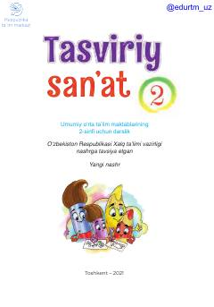

TS2-sinf o'quvchilari uchun tasviriy san'at va rasm chizish darsligi.
Mazkur darslik umumiy o'rta ta'lim maktablarining 2-sinf o'quvchilari uchun mo'ljallangan bo'lib, grafika, haykaltaroshlik, rangtasvir va kompozitsiya asoslarini o'rgatadi. Kitobda o'quvchilarning tasviriy san'at bo'yicha amaliy ko'nikmalarini shakllantiruvchi qiziqarli mavzular va topshiriqlar berilgan.